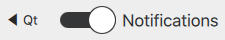

ToolBar QML Type
A tool bar control. More...
| Import Statement: | import Qt.labs.controls 1.0 |
| Inherits: |
Detailed Description
ToolBar is a container of application-wide and context sensitive actions and controls, such as navigation buttons and search fields. ToolBar is commonly used as a header or a footer of an ApplicationWindow.
ToolBar does not provide a layout of its own, but requires you to position its contents, for instance by creating a RowLayout. If only a single item is used within the ToolBar, it will resize to fit the implicit size of its contained item. This makes it particularly suitable for use together with layouts.

ApplicationWindow {
visible:true
header: ToolBar {
RowLayout {
anchors.fill: parent
ToolButton {
text: qsTr("\u25C0 %1").arg(Qt.application.name)
enabled: stack.depth > 1
onClicked: stack.pop()
}
Item { Layout.fillWidth: true }
Switch {
checked: true
text: qsTr("Notifications")
}
}
}
StackView {
id: stack
anchors.fill: parent
}
}
Note: Types in the Qt.labs module are not guaranteed to remain compatible in future versions.
See also ApplicationWindow, ToolButton, Customizing ToolBar, and Container Controls.